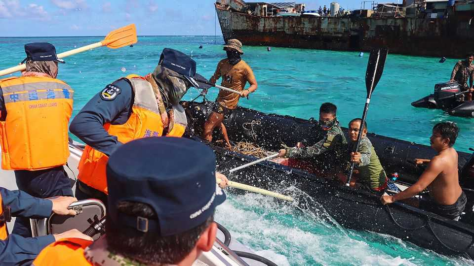
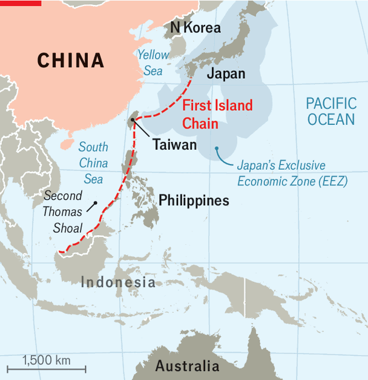

China bets that Donald Trump won’t mind it bullying American allies
It has stepped up its abuse of Australia, the Philippines and Japan

Jul 30th 2026
“THEY ARE making fools of us,” Gilbert Teodoro junior, the Philippines’ defence secretary, complained to reporters in Manila on July 23rd. Three days earlier, Chinese coastguards had been filmed using oars to batter Philippine sailors aboard a navy vessel at Second Thomas Shoal, an atoll claimed by both countries in the South China Sea. After a brief brawl, the Filipinos, in shorts and T-shirts, repulsed the Chinese coastguards clad in navy uniforms and orange high-viz vests. Two of the Filipinos were later hospitalised.
The fracas was just one in a series of recent incidents along archipelagic Asia that add up to a picture of a more aggressive China. In March an Australian helicopter enforcing United Nations sanctions against North Korea reported a dangerous interception by Chinese aircraft over the Yellow Sea. In early July China launched a ballistic missile from a submarine in the South China Sea over the Philippines and into the South Pacific. And just a day before the punch-up at Second Thomas Shoal, Chinese vessels staged a live-fire exercise in Japan’s exclusive economic zone east of the Philippines.

There is a pattern to this uptick in aggressive acts. China began probing American allies soon after a meeting between Presidents Donald Trump and Xi Jinping in Busan in October 2025, escalated its activities in March as America became bogged down in the Persian Gulf, and has gone even further since Mr Trump and Mr Xi held a summit in Beijing in May. “It’s a test of how much Washington is going to react and defend its allies in the region,” says Huong Le Thu of the International Crisis Group, a think-tank with headquarters in Brussels. Yet over the same period relations between China and America have improved. China, say Asian diplomats, is betting that Mr Trump won’t do anything to upset that trend, much less tell China to leave its allies alone.
The incidents range along the so-called “first island chain”, the string of archipelagoes stretching from northern Japan through Taiwan to the Philippines. China has tended to target American allies in turn, but this time the People’s Liberation Army seems to be bullying several at once.
The Philippines has come in for the worst treatment so far. Not coincidentally, it is the weakest American ally in the chain and the one to which American commitments have long appeared shakiest. In 2024 Ferdinand Marcos junior, the country’s president, said that any loss of life in the South China Sea would be “very, very close to what we would define as an act of war” and that he would expect an American response. But it is doubtful that Donald Trump would honour American commitments as Mr Marcos expects.
The skirmish near Second Thomas Shoal on July 20th was particularly dangerous. The desolate reef has become a flashpoint because of the Sierra Madre, a rusting Philippine navy ship beached there in 1999 as a show of sovereignty. While America is not bound to defend other disputed islets claimed by the Philippines, it has clear obligations under its mutual-defence treaty to protect the Sierra Madre and the small detachment of Philippine marines on board. Some analysts think that China is trying to drive a wedge between America and the Philippines by showing Filipinos that Uncle Sam cannot be trusted to meet those commitments.
The pressure on Australia and Japan has been more carefully calibrated, but no less palpable. China’s ballistic-missile test into the South Pacific took place on the day that Australia signed a mutual-defence pact with Fiji. The live-fire drills in Japan’s EEZ were preceded in late June by a joint patrol of Chinese and Russian nuclear-capable bombers around Japan; it was the second such flight since Japan’s prime minister, Takaichi Sanae, angered China last November by suggesting that Japan may have a role to play in a conflict over Taiwan. China’s simultaneous squeeze of American allies in part reflects its perception that America’s influence in Asia is waning and its attention is diverted by the war in Iran, reckons Iida Masafumi of the National Institute for Defence Studies in Tokyo, a Ministry of Defence think-tank: “From China’s point of view, Donald Trump is digging his own grave.”
American forces are hardly absent. Marco Rubio, America’s secretary of state, has said that an American coastguard cutter was near enough to Second Thomas Shoal on July 20th to pick up the two injured Filipinos and ferry them to safety. American officials acknowledge that some units normally based in Asia have been deployed to the Middle East. But at the same time, America’s Pacific Command has sent ships, aircraft, troops and missiles westward from bases in America into the first island chain to try to deter Chinese aggression against allies. It has deployed advanced missile systems to both Japan and the Philippines until the end of the summer, and on July 21st Pacific Command released photographs, by then several weeks old, showing the Dark Eagle long-range hypersonic system, the cutting edge of America’s missile arsenal, deployed within range of mainland China for the first time.
But this appears not to have deterred China. The problem is not American military capabilities so much as Mr Trump’s intentions. At their summit in May, Mr Trump and Mr Xi agreed to uphold what the Chinese side termed “constructive strategic stability”. American officials quickly adopted the phrase, too, but have yet to clarify what it means to them. Ms Le Thu of Crisis Group says that China is using military activities to define the words as giving China a bigger sphere of influence. James Char of Nanyang Technological University in Singapore agrees. “The Chinese are trying to normalise these activities,” he says, “to tell the world that they have the ability to hurt these countries that are not friendly.” ■
For exclusive coverage of Asian politics, economics and security, sign up to Asia Bulletin, our weekly subscriber-only newsletter.